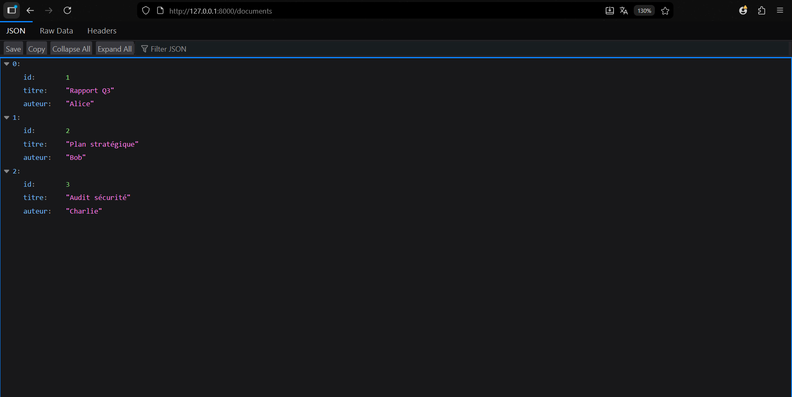

Analyse de l'Architecture Serveur-Client HTTP (REST/JSON)
Réalisé par : Hamza khchichine (Groupe 1)
Ce rapport présente l'analyse des travaux pratiques portant sur la mise en place d'une communication
client-serveur classique sous le protocole HTTP. Nous avons étudié et corrigé deux scripts en Python : un
serveur HTTP minimaliste fournissant une API REST (Server.py), et un client HTTP requêtant
cette API avec une gestion des temps d'attente réseau (client.py).
Le script Server.py utilise la bibliothèque standard http.server de Python pour
implémenter un serveur web sur l'adresse 127.0.0.1:8000.
GET sur les routes
/documents (pour lister tous les documents) et /documents/{id} (pour récupérer
un document spécifique). Il renvoie les données au format application/json.
time.sleep()) pouvant aller de 0 à 2 secondes avant de répondre.
La première capture d'écran montre le résultat de la requête GET sur
http://127.0.0.1:8000/documents depuis Mozilla Firefox (ou interface web de type visualiseur
JSON). Le serveur a bien répondu avec un flux JSON correctement formaté représentant l'intégralité des
documents, avec une coloration syntaxique des structures : les clés, les valeurs numériques (id) et les
chaînes de caractères (titre et auteur des documents comme "Rapport Q3" par "Alice").

Figure 1 : Rendu JSON dans le navigateur (veuillez sauvegarder l'image en tant que `browser_capture.png` dans ce dossier)
Le script client.py exploite le module natif urllib.request pour interagir avec le
serveur. L'objectif était d'appeler plusieurs fois l'API afin de visualiser la gestion de la latence de
manière client.
1 à 5 reprises au
cours d'une boucle.TIMEOUT_SECONDS = 1.5) déclenchant une exception réseau si le serveur tarde.TimeoutError (qui remonte depuis le socket Python
bas-niveau) ainsi que l'urllib.error.URLError.La deuxième capture et nos exécutions montrent les logs générés par le client dans un terminal intégré de type VS Code. L'encodage a par ailleurs été corrigé pour empêcher la console de générer des conflits d'unicode sous Windows (les emojis et accents ont été retirés).
Plusieurs scénarios se présentent aléatoirement pour chaque requête à cause de la latence simulée côté serveur :
timeout=1.5 coupe la connexion locale de façon fiable et
affiche fièrement : TIMEOUT apres [X]s.Le script client_retry.py implémente un client HTTP robuste capable de relancer une requête
échouée de manière espacée.
Le terminal montre clairement l'escalade du temps d'attente généré aléatoirement avant un succès, stabilisant les échanges entre le client et un serveur défaillant.
Le script client_async.py démontre l'intérêt de la parallélisation des requêtes réseau grâce au
module asyncio.
async/await.asyncio.gather().Comme le montrent les logs, les appels parallèles abaissent considérablement le temps de réponse total puisqu'il correspond uniquement au maximum des latences individuelles (0.8s) et non plus à la somme de toutes les latences enchaînées (1.61s).
Ce TP démontre efficacement les fondements des architectures Micro-services / API REST. La mise en œuvre illustre la découple entre un backend qui héberge la ressource et un backend/client qui la consomme.
Par-dessus tout, l'accent a été mis sur la gestion d'erreurs cruciales : la résolution de problèmes d'échappement (Unicode et indentation Python) et, surtout, la gestion proactive des timeouts. Fixer des limites de temps aux requêtes est indispensable pour concevoir des applications résilientes, permettant à un client de ne pas bloquer complètement si l'un de ses services externes vient à ralentir dramatiquement.